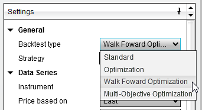
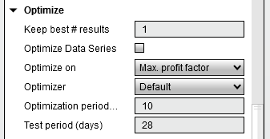
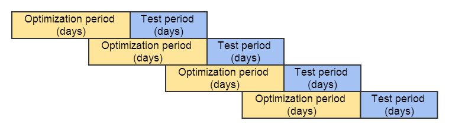

|
<< Click to Display Table of Contents >> Walk Forward Optimization |


|
Walk Forward Optimization
|
<< Click to Display Table of Contents >> Walk Forward Optimization |
|
Walk Forward optimization is the process by which you optimize strategy input parameters on a historical segment of market data, then test the strategy forward in time on data following the optimization segment using the optimized input values. The central idea is that you evaluate strategy performance data on the test data, not the data used in the optimization. This process is then repeated by moving the optimization and test segments forward in time. To run a walk forward optimization you will need:
•Access to historical data
•Custom NinjaScript *strategy
•A thorough understanding of the Strategy Analyzer's backtesting and optimization capabilities
Tip: There are several pre-defined sample strategies that are installed with NinjaTrader that you can explore. |
Note: The IncludeTradeHistoryInBacktest property is set to false by default when a strategy is applied in the Strategy Analyzer for optimization. This provides for leaner memory usage, but at the expense of not being able to access Trade objects for historical trades. Thus, fields such as SystemPerformance.AllTrades.Count that rely on references to Trade objects will not have any such references to work with. If you would like to save these objects for reference in your code, you can set IncludeTradeHistoryInBacktest to true in the Configure state. For more information, see the Working with Historical Trade Data page. |
 How to run a Walk Forward Optimization
How to run a Walk Forward Optimization
Start a Walk Forward OptimizationTo run a Walk Forward Optimization select the Backtest type of "Walk Forward Optimization" in the settings panel of the Strategy Analyzer.
i
Setting the Test RangeYou can the test range of strategy parameters to be tested by left clicking on the triangle to expand the strategies sub parameters.
Note: If you don't see the triangle make sure that the Backtest type is set to "Walk Forward Optimization".
Min. - The starting value you want to test
In the image above, the input "Fast" has a starting (initial) value of 10 and an ending value of 30 with an increment of 1. This means that the first value tested will be 10, then 11, then 12 all the way through 30. The input "Slow" has a starting value of 6, ending value of 16 with an increment of 1. Based on these settings, a total of 200 (20 unique values for "Fast" multiplied by 10 unique values for "Slow") backtest iterations will be processed in order to find the optimal combination of input values based on the best optimization fitness.
Setting the Optimization FitnessOptimization is based on the best optimization fitness you select. If you set the property "Optimize on..." to "Max. net profit", the optimizer will seek the optimal input values that return the maximum profit possible. There are over 10 different optimization criterion you can select and can be customized via NinjaScript. Please see the "Understanding Walk Forward properties" section below for more information. |
 Understanding Walk Forward properties
Understanding Walk Forward properties
Walk Forward PropertiesApart from the walk forward optimization specific properties described below, the properties are identical to the ones found in the Optimization properties window. Please see the "Understanding optimization properties" section of the Optimize a Strategy page of the Help Guide for more information.

|
 Understanding Walk Forward results
Understanding Walk Forward results
Understanding Walk Forward Test ResultsFrom the Start date to the End date the walk forward optimization will do a standard optimization on the number of days set for parameter "Optimization period (days)". This is known as the "In Sample" test period. After the optimization period NinjaTrader will use the best parameter combination found and test that forward on non-optimized data that has not been seen yet for the number of days set for parameter "Test period (days)". This is known as the "Out of sample" test period. Please see the graph below for a better understanding of how the walk forward results are found. The results for each "Test period" are returned and shown in the Optimization Results Grid along with the Start date, End date, and the best combination found by the optimization period.
|